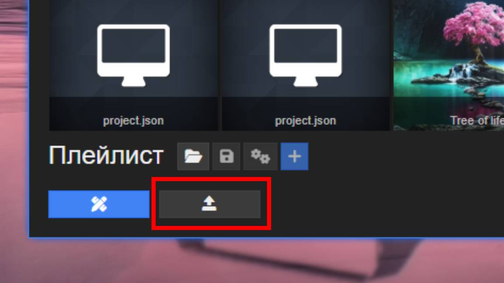
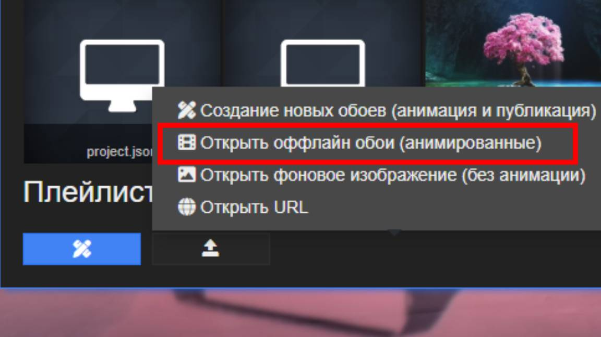
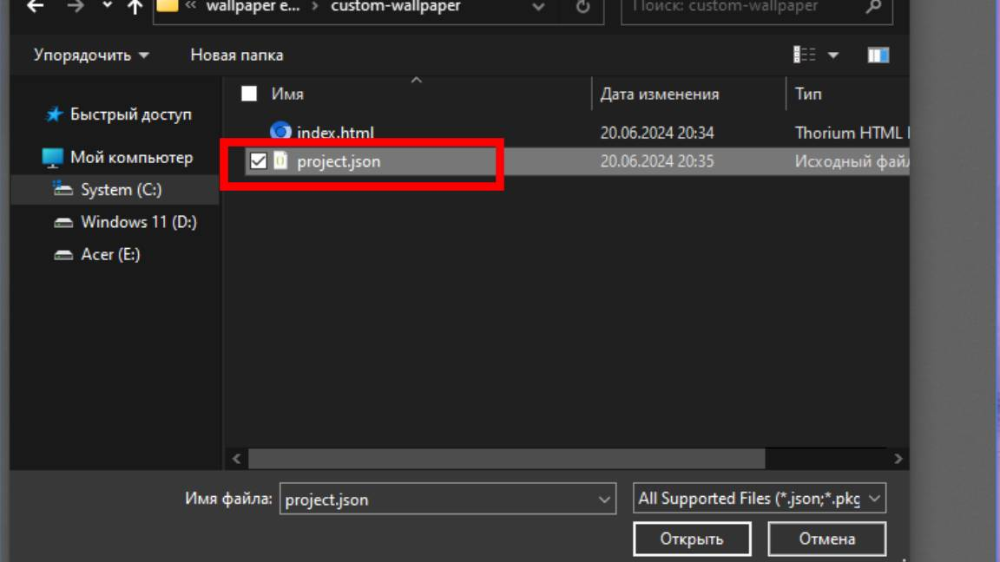
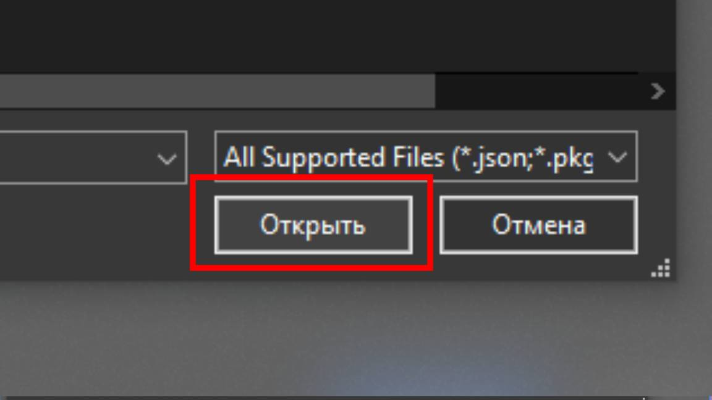
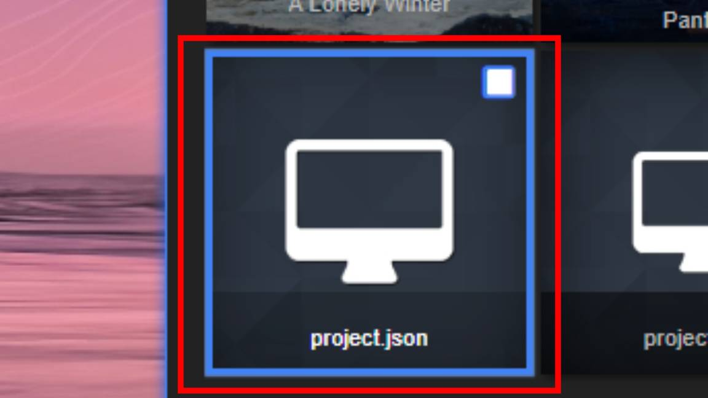
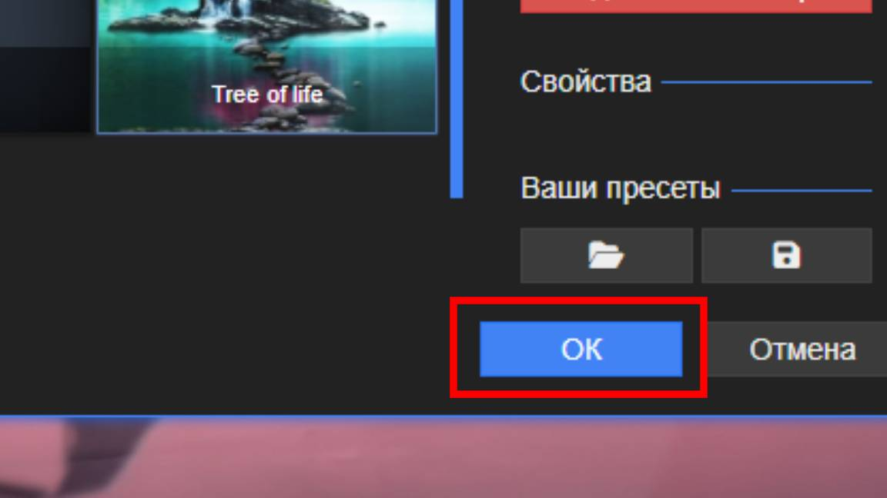

Гайд: Как поставить обои в Wallpaper Engine
Начнём с самого простого, требования для данной процедуры, архив с проектом, в данном случае с обоями, в виде архива, во вторых нам нужен архиватор, можно использовать WinRAR или 7-Zip, что-бы достать файлы из архива
1. Распакуйте архив с обоями (Скачать: WinRAR или 7-Zip)
2. Положите эту папку, в вкладку с обоями
3. Откройте Wallpaper Engine (Скачать в вкладке с обоями)
4. Следуйте шагам по фото:
Нажмите данную кнопку как показано на фото.

Выберите *Открыть оффлайн обои*

Далее выбирите файл *.json* из папки с обоями

Нажмите *Открыть*

Далее нажмите на обои project.json

Нажмите OK для подтверждения

Готово, вы поставили новые обои из скачанного архива, удачного использования программы!